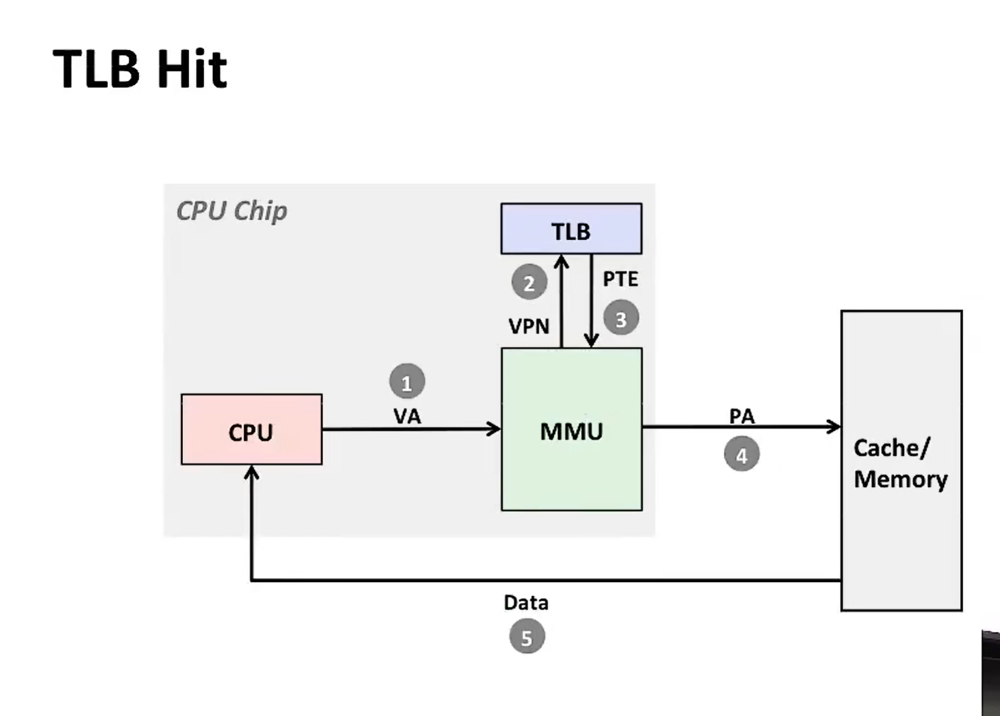

Shell
shell是啥
一般来说，Shell是指操作系统中提供访问内核所提供之服务的程序。Shell也用于泛指所有为用户提供操作界面的程序，也就是程序和用户交互的层面。因此与之相对的是内核（英语：Kernel），内核不提供和用户的交互功能。
Shell本身是一个用C语言编写的程序，它是用户使用Linux的桥梁。Shell既是一种命令语言，又是一种程序设计语言。
作为命令语言，它交互式地解释和执行用户输入的命令；作为程序设计语言，它定义了各种变量和参数，并提供了许多在高级语言中才具有的控制结构，包括循环和分支。
Shell有两种执行命令的方式：交互式（Interactive）和批处理（Batch）。
shell脚本解释器
Shell是一种脚本语言，那么，就必须有解释器来执行这些脚本。
常见的Shell解释器有bash、csh、ksh、zsh等。
bash是最常用的Shell解释器，它是GNU Project的自由软件，是Linux、Unix和Mac OS X的默认Shell。
int、unsigned、float、double...

位移：1个时钟周期；乘法：数个时钟周期；除法：30个时钟周期；
big endian、little endian：字节序，大端序是高位字节排放在内存低地址端，小端序是低位字节排放在内存低地址端。
小数：
乘法的底层实现：
除法的底层实现：
汇编语言
算术指令：leaq、addq、subq、andq、orq... （q：quadword 四字）（sd:single double doubleword 单双字）(apd:add packed doubleword 加包双字)
寄存器：%rax、%rbx、%rcx、%rdx、%rsi、%rdi（数组基指针）、%rsp（栈指针）、%rbp(基指针)、%rip（指令指针）、%r8~%r15
寄存器：%xmm0~%xmm15(浮点数寄存器，128位)，%ymm0~%ymm15(浮点数寄存器，256位)，%zmm0~%zmm31(浮点数寄存器，512位)
系统调用号：%eax、%ebx、%ecx、%edx、%esi、%edi、%ebp、%esp、%eip
条件码：%cf、%zf、%sf、%of
条件循环：（goto语句）loop:... goto loop，（汇编指令）.L2: ... j() .L2；j()为jump，()为条件
callq：调用函数，返回地址存入栈顶，返回地址指向下一条指令。
retq：返回函数，从栈顶弹出返回地址，并跳转到该地址。
univ：通用寻址模式，用于访问内存中的任意位置。
jmpq：无条件跳转。
数组、类、union：
canray：防止缓冲区溢出攻击。
gadget：可以被用来构造攻击的小片段。
gcc优化
O1：进行常规优化，编译速度较慢，代码量一般。
O2：进行高度优化，编译速度较慢，代码量较少。
O3：进行最高优化，编译速度较慢，代码量最少。
-O：等同于-O2。
向量化编程：将一个循环中的多个操作合并为一个向量操作，比如循环访问一个数组，可以将多个元素同时存入向量寄存器，然后一次性计算。
循环展开：将一个循环展开为多个循环。
分支预测：通过分析代码的执行路径，提前预测执行的分支，guess！
缓存优化：将数据存放在缓存中。
Latency Bound：延迟绑定，即指令的执行时间与指令的输入数据量成正比。
vec Throughput Bound：向量化指令的吞吐量, 即处理器的每秒能执行的指令数, 与向量长度成正比。
内存
Disk：比DRAM慢10,000倍
DRAM：dynamic random-access memory，动态随机存取存储器，比SRAM慢10倍。
SRAM：static random-access memory，静态随机存取存储器
ALU：算术逻辑单元，负责执行算术运算和逻辑运算。
SSD：Solid State Drive，固态硬盘。
rotating disks：旋转式磁盘。
cache：高速缓存，位于CPU和内存之间，用于存储最近访问过的数据。
miss or hit：缓存命中或未命中，缓存命中时，直接从缓存中读取数据，未命中时，需要从内存中读取数据（100倍时钟周期），然后存入缓存，再次访问时，直接从缓存中读取数据。
cache memory：S*E*B
memory mountain：
链接
linkers最难调试，很难搞明白内部发生了什么：
gcc -Og test.cpp sum.cpp -lstdc++ -o test
默认：静态链接，但是会先分离编译为汇编文件，再链接。
静态链接：将目标文件中的代码和数据直接拷贝到可执行文件中，运行时不需要再进行链接。
动态链接：将目标文件中的代码和数据拷贝到内存，运行时再进行链接。
strong、weak、lazy：强（有初始化全局）、弱（无初始化全局）、延迟，静态链接时，强符号和弱符号的选择；动态链接时，只有强符号才会被加载。
-fno-common：当linkers遇到多个弱符号时，会报错，如果不加入该指令，则会选一个符号，并且有可能覆盖后面的变量；
所以要注意全局变量的初始化
relocation entry：重定位条目
共享库：动态链接库，可以被多个程序共享。
库打桩：将程序中的函数替换为自己的函数，以达到调试目的。
异常控制流
ECF：异常控制流，是指程序在运行过程中，出现异常或错误时，如何处理，以保证程序的正常运行。
异常：将控制权从用户代码交给操作系统内核态中的代码
内核：内核内存受保护，对用户程序不可用
异步异常（Asynchronous Exception(中断)）：由硬件或软件引起的异常，如时钟中断、网络错误、磁盘错误等。
同步异常：由程序自己引起的异常，如除零错误、数组越界等。
system call：系统调用，是用户态到内核态的接口，是操作系统提供给用户程序的接口:
页缺失：当程序访问的内存页不在内存中时，产生的异常，
return: no return:
multiprocessing时的CPU上下文切换：保存当前进程的CPU上下文，加载另一个进程的CPU上下文。
并发（currency）:
getpid(): 获取当前进程的ID
getppid(): 获取父进程的ID
fork(): 创建子进程, (windows没有), 调用一次返回两次，父子进程各有一个pid
execve(char *filename, char *argv[], char *envp[]): 加载并运行一个新的程序，例如：execve("/bin/ls", NULL, NULL)，返回值小于0，会报错指令不存在;
wait(int *child_status): 等待子进程结束
exit(int status): 退出程序, status为退出状态，父进程退出，子进程不会退出。
return: no return:
I/O
ssize_t: 读写操作的返回值类型，ssize_t是一种带符号的整型，它可以表示一个带符号的整数类型，一般用于表示读写操作的字节数。
ssize_t read(int fd, void *buf, size_t count): 从文件描述符fd中读取count个字节到缓冲区buf中，返回实际读取的字节数。
ssize_t write(int fd, const void *buf, size_t count): 从缓冲区buf中写入count个字节到文件描述符fd中，返回实际写入的字节数。
RIO是什么: rio是一种低级I/O接口，它提供了一种比标准I/O接口更加底层的访问方式，主要用于网络连接。
RIO的优点：可以访问设备驱动程序，可以直接访问内存，可以访问网络。
RIO的缺点：不支持多路复用，不支持超时，不支持异步I/O。
RIO的使用：rio_read(fd, buf, count)、rio_write(fd, buf, count)。
dup2(oldfd, newfd): 复制文件描述符，将文件描述符oldfd复制到文件描述符newfd。
dup(fd): 复制文件描述符，复制文件描述符fd，返回复制后的文件描述符。
虚拟内存
VM(virtual memory)：使得一个物理内存可以被分割成多个大小相等的小内存块，每个小内存块都可以被映射到虚拟地址空间。
MMU(Memory Management Unit)：内存管理单元，负责将虚拟地址映射到物理地址。
PTE(Page Table Entry): 页表项，存储虚拟页和物理页的映射关系。
VP(Virtual Page): 虚拟页，是虚拟内存的最小单位，大小为4KB。
PP(Physical Page): 物理页，是物理内存的最小单位，大小为4KB。
共享库（shared library）：多个进程可以共享同一个库文件，其实现就是不同进程的虚拟地址空间映射到同一块物理内存。
页表（page table）：存储虚拟页和物理页的映射关系。
页帧（page frame）：物理内存的最小单位，大小为4KB。
页式存储管理：将虚拟地址空间划分为大小相同的页，每个页对应一个物理页。
段式存储管理：将虚拟地址空间划分为大小不等的段，每个段对应一个物理页。
段页式存储管理：将虚拟地址空间划分为大小不等的段，每个段对应多个物理页。
权限位：高位为0的地址为用户代码保留，高位为1的地址为内核代码保留。
TLB(Translation Lookaside Buffer)：页表缓存，用于缓存最近访问过的页表项。

动态存储器分配器
基本思想：应用程序使用它去操作虚拟内存，去构造、分片以及释放虚拟储存器片
显式分配器：C/C++中的malloc()、new、free()等函数，由程序员手动调用。
隐式分配器：java、lisp、python等语言都有自己的隐式分配器，例如：垃圾回收器。
void* malloc(size_t size):
sbrk(size_t increment): sbreak, 系统调用，增加或者减少进程数据段的大小。
header field：头部字段，用于描述内存块的大小、状态等信息。
footer field：尾部字段，用于描述内存块的状态等信息。
空闲块链表：用于管理空闲块。
分配块：分配器从空闲块链表中找到一个空闲块，并将其分配给程序。
释放块：分配器将分配给程序的内存块释放回空闲块链表。
合并块：分配器将相邻的空闲块合并成一个大的空闲块。
分配策略：先进先出、最佳适应、最坏适应。
碎片整理：当程序释放内存块时，分配器将其合并到相邻的空闲块中。
寻找空闲块：先查看空闲块链表，如果有空闲块，则分配；如果没有空闲块，则向操作系统申请新的内存。
网络编程
IPv4：Internet Protocol version 4, 32字节的IP地址。
IPv6：Internet Protocol version 6, 128字节的IP地址。
网络使用大端字节序储存地址，字节高位在底层。
nslookup：域名解析工具。
一个ip对应多个域名，一个域名亦可以对应多个IP地址。
端口号对应特定服务：

int socket(int domain, int type, int protocol): 创建套接字，返回文件描述符。
int bind(int sockfd, const struct sockaddr *addr, socklen_t addrlen): 绑定套接字到地址。
int listen(int sockfd, int backlog): 监听套接字，等待客户端连接。
int accept(int sockfd, struct sockaddr *addr, socklen_t *addrlen): 接受客户端连接, 返回新的套接字文件描述符。
int connect(int sockfd, const struct sockaddr *addr, socklen_t addrlen): 连接到服务器，返回0表示成功。
csapp.c与csapp.h：csapp.c是网络编程的入口文件，包含了网络编程的基本函数，适用于linux系统。
struct addrinfo { int ai_flags; int ai_family;
int ai_socktype;
int ai_protocol;
socklen_t ai_addrlen;
struct sockaddr *ai_addr;
char *ai_canonname;
struct addrinfo *ai_next; };
int getaddrinfo(const char *node, const char *service, const struct addrinfo *hints, struct addrinfo **res): 返回一个链表指针，包含一组套接字地址信息。
int getnameinfo(const struct sockaddr *sa, socklen_t salen, char *host, socklen_t hostlen, char *serv, socklen_t servlen, int flags): 将套接字地址转换为主机名和服务名。
int ai_socktype;
int ai_protocol;
socklen_t ai_addrlen;
struct sockaddr *ai_addr;
char *ai_canonname;
struct addrinfo *ai_next; };
Vim
插入
i：进入编辑模式，输入字符；
a：进入编辑模式，在光标后插入字符；
o：在当前行下方打开新行；
O：在当前行上方打开新行；
移动
hjkl：左下上右键，光标移动;
（number）+web：下个单词，单词end，单词begin；
删除
输入
number+i+...+esc：输入内容重复number次；
其他
u：返回上一步
报错
典型
segmentation fault(分段错误)：程序试图访问非法的内存地址。
stack overflow(栈溢出)：程序调用函数时，栈的空间不足，导致溢出。
c++标准库异常类
std::bad_alloc：内存分配失败。
std::bad_cast：类型转换失败。
std::runtime_error：运行时错误。
std::overflow_error：数值运算结果溢出。
std::underflow_error：数值运算结果下溢出。
std::range_error：数学函数的结果超出定义域。
std::logic_error：逻辑错误。
std::domain_error：数学函数的参数不在定义域。
std::invalid_argument：函数的参数无效。
std::out_of_range：访问超出范围的元素。
std::length_error：容器的长度超过最大值。
正则表达式
基础
^：匹配字符串的开始；
$：匹配字符串的结束；
.*：匹配任意字符（包括换行符）；
+：匹配前面的字符1次或多次；
?：匹配前面的字符0次或1次；
[]：匹配括号中的字符；
{}：匹配前面的字符出现次数；
|()：匹配括号中的字符，或；
^：匹配字符串的开始；
$：匹配字符串的结束；
特殊
\d：匹配任意数字；
\D：匹配任意非数字；
\w：匹配任意字母、数字、下划线；
\W：匹配任意非字母、数字、下划线；
\s：匹配任意空白字符；
\S：匹配任意非空白字符；
\b：匹配单词边界；
\B：匹配非单词边界；
\n：匹配换行符；
\t：匹配制表符；
\r：匹配回车符；
\f：匹配换页符；
\a：匹配响铃符；
\e：匹配 escape 字符；
示例
phone_num：(\\()?(\\d{3})(\\))?([-. ])?(\\d{3})([-. ]?)(\\d{4})
^hello：匹配以hello开头的字符串；
world$：匹配以world结尾的字符串；
hello.*world：匹配hello后面任意字符，world前面任意字符的字符串；
hello+world：匹配hello后面至少一个字符，world前面任意字符的字符串；
hello?world：匹配hello后面0个或1个字符，world前面任意字符的字符串；
[a-z]：匹配任意小写字母；
[A-Z]：匹配任意大写字母；
[0-9]：匹配任意数字；
[^0-9]：匹配任意非数字；
hello\sworld：匹配hello后面至少一个空白字符，world前面任意字符的字符串；
hello\Sworld：匹配hello后面至少一个非空白字符，world前面任意字符的字符串；
hello\bworld：匹配hello后面和world前面都是单词边界的字符串；
hello\Bworld：匹配hello后面和world前面都不是单词边界的字符串；
C++
字符串
substr方法：string new_str = s.substr(pos, len)，拷贝从pos开始的len个字符到一个新的字符串。
replace方法：s = s.replace (size_t pos, size_t len, const string& str); 可结合s.find()方法，到达替换目标字符串。
STL容器
map：key-value对的集合，通过key查找value。
unordered_map：key-value对的集合，通过key查找value，不会根据key的大小进行排序。
set、map：插入、查找、删除的时间复杂度为O(logn);
unordered_set、unordered_map：插入、查找、删除的时间复杂度为O(1);
vector的小知识
emplace_back方法：在vector尾部直接创建元素，省去了push_back创建临时对象以及其移动或拷贝的步骤。
pop_back：与push_back相对应，删除vector尾部元素。
resize：resize(size_t new_size, const T& val)，调整vector的大小
assign：assign(size_t count, const T& val)，将vector所有元素赋值为val。
&的用法
取地址：int *p = &a，p指向a的地址。
引用（别名）：int &r = a，r是a的别名，可以直接用r来代替a。作为函数的参数，处理大块数据的传递（有同样的作用的便是指针）；
常引用：const int &cr = a，cr是a的常引用，通过修改a的值来修改cr，提高安全性，注意：引用作为函数的参数时尽量使用常引用；
作为函数的返回：int &Func(){}，在内存中不产生返回值的临时变量，但是不能返回函数局部变量
手搓简易虚拟机和c编译器
设计思路
源代码->词法分析->语法分析->语义分析->中间代码(->优化器（optimizor）->中间代码)->目标代码->汇编代码->机器码。
词法分析：
中间代码：一般为AST（抽象语法树）
自制简易编译器：前后端合一，自定义VM，one-pass（一遍过）
自定义VM：register: pc/sp/bp/ax; MEM: code/data/stack; 指令集: Save&Load/cal运算/分支跳转(/Native-Call)
cal: 四则运算、位运算、逻辑运算
分支跳转：branch/jump/cmp/call/return
Native-Call: IO(print/open/write/read)、动态(malloc/free/memset)
函数调用
stack：保存参数、返回地址、局部变量、临时变量
BrainFuck: 指针指向当前位置，+/-移动指针，[跳转]、,输入、.输入_______e.g. ,>,[<+>-]
四指令：CALL\NAVR\DARG\RET
call: 保存返回地址，跳转到目标函数
navr: 跳转到目标地址
darg: 保存参数
ret: 返回
词法分析
关键字：
标识符
tokenize方法：将源代码分割成token
符号表：token-id、hash、name、class、type、value（address）
语法分析
syntax:
lexeme: 词素
token: 象征
semantic: 语义
grammar: 语法
文法：E->E+T|T
递归下降: S = aS | bS`
S` = a | µ
S: 开始符
a、b: 终结符, 理解为token
µ：空
|：或
S` = a | µ
表达式求值
语句与表达式：
优先级爬山算法：